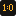
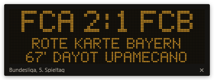
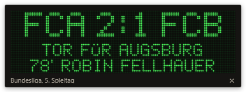
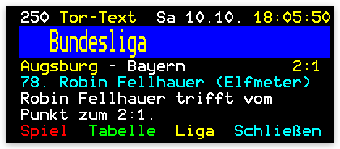
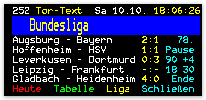
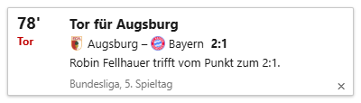
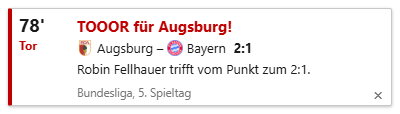
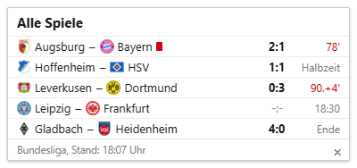
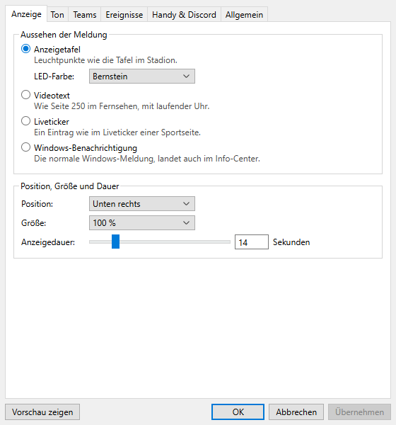
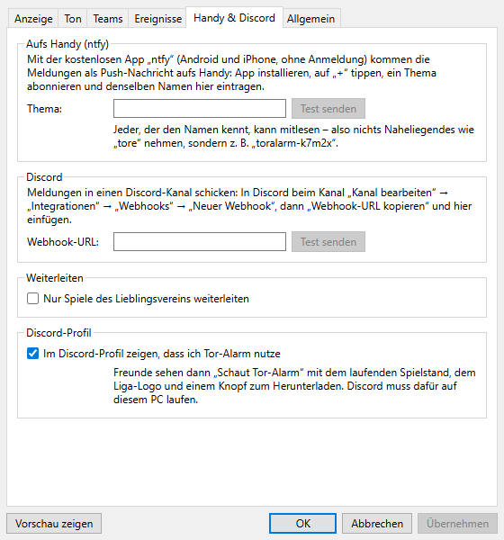

Tor-Alarm ist ein kleines Windows-Programm, das dir jedes Tor sofort auf dem Desktop meldet – mit Spielstand und Torschütze, ohne dass nebenbei ein Liveticker offen sein muss.
Tor-Alarm herunterladen Tor-Alarm-Setup-1.1.0.exe, rund 90 MBSieht so aus, als wärst du gerade nicht an einem Windows-PC. Die Datei läuft nur unter Windows 10 und 11 – also lieber später am Rechner herunterladen.
Nur für Windows 10 und 11. Kostenlos, ohne Werbung, ohne Konto.
Was neu ist, steht auf der Release-Seite bei GitHub.
So geht’s los
- Herunterladen und ausführen. Die Setup-Datei öffnen und durchklicken.
- Windows warnt? Tor-Alarm ist nicht kostenpflichtig signiert. Deshalb fragt eventuell schon der Browser nach (dann die Datei behalten), und Windows meldet beim Öffnen „Der Computer wurde durch Windows geschützt“. Dann auf Weitere Informationen und danach auf Trotzdem ausführen klicken.
- Unten rechts schauen. Tor-Alarm sitzt jetzt im Infobereich der Taskleiste: die kleine Tafel mit „1:0“

, eventuell hinter dem Pfeil ^. Rechtsklick öffnet das Menü (dort gibt’s auch „Test-Tor zeigen“), Doppelklick die Einstellungen. Beim ersten Start kommt zur Probe gleich ein Tor.
Vier Looks
Wie die Meldung aussieht, suchst du dir aus. Die Bilder hier sind echte Bildschirmfotos aus dem Programm.
1 Anzeigetafel
Leuchtpunkte wie die Tafel im Stadion, Punkt für Punkt gezeichnet – genau die von oben. Gibt’s in Bernstein, Rot, Grün und Weiß.


2 Videotext
Wie Seite 250 im Fernsehen, mit laufender Uhr oben rechts. Für alle, die früher samstags vor dem Videotext saßen.


3 Liveticker
Ein Eintrag wie im Liveticker einer Sportseite, mit Vereinswappen. Tore deines Vereins kommen in Rot.



4 Windows-Benachrichtigung
Die kennst du: die ganz normale Meldung von Windows. Landet auch im Info-Center, falls du gerade nicht hingeschaut hast.
Davon gibt’s hier kein Bild. Drin steht dasselbe wie im Liveticker – „Tor für Augsburg“, der Spielstand und wer getroffen hat –, daneben das Wappen.
Umstellen
Doppelklick auf das Symbol unten rechts öffnet die Einstellungen. Unter „Anzeige“ wählst du den Look, die Ecke, die Größe (bis 150 %) und wie lange die Meldung stehen bleibt (5 bis 60 Sekunden). „Vorschau zeigen“ führt sie dir gleich vor.

Was es kann
Zufällig genau elf Punkte.
-
Jedes Tor in Sekunden
Mit Torschütze, Minute und Vorlage, dazu Elfmeter oder Eigentor. Wird ein Tor wieder zurückgenommen, kommt auch das – und wenn es dann doch zählt, „Tor zählt doch“.
-
Acht Wettbewerbe
Bundesliga, 2. Liga, 3. Liga, Frauen-Bundesliga, DFB-Pokal, Champions League, Europa League und Conference League. Ab Werk ist nur die Bundesliga an, den Rest hakst du in den Einstellungen an. Im Europapokal erst mal nur Spiele mit deutschen Teams, auf Wunsch alle.
-
Dein Verein
Tore deines Lieblingsvereins kommen mit großem „TOOOR!“ und eigenem Jubel-Sound. Gegentore wahlweise normal, leise oder gar nicht.
-
Anpfiff, Halbzeit, Abpfiff, Rote Karte
Jeweils einzeln an- und abschaltbar, mit passendem Pfiff: einer zum Anpfiff, zwei zur Pause, drei zum Schluss. Gelb-Rot zählt bei den Roten Karten mit.
-
Alle Spielstände auf Knopfdruck
Strg+Alt+T zeigt alle Spiele des Tages auf einmal: laufende mit Spielstand, spätere mit Anstoßzeit. Das Kürzel kannst du ändern.
-
Aufs Handy
Tore zusätzlich als Push-Nachricht über die kostenlose App ntfy, ohne Konto. Wie das geht, steht unten bei den Fragen.
-
In deinen Discord-Kanal
Per Webhook landen die Tore in einem Kanal deiner Wahl – zum Beispiel auf dem Server mit deinen Leuten.
-
Im Discord-Profil
Deine Freunde sehen „Schaut Tor-Alarm“ mit dem laufenden Spielstand und dem Liga-Logo, dazu einen Knopf „Tor-Alarm holen“, der hierher führt. Ist ab Werk an und lässt sich abschalten.
-
Ton nach Geschmack
Schiri-Pfiff, Stadionhupe, Torglocke, Stadionjubel – oder deine eigene Torhymne als MP3.
-
Auch mal Ruhe
Feste Ruhezeit, zum Beispiel nachts. Oder im Menü stumm schalten: für eine Stunde, drei Stunden oder bis morgen um acht. Praktisch auch, wenn du ein Spiel im Stream mit Verzögerung schaust.
-
Keine Pfiff-Lawine
Nach dem Standby oder wenn das Internet eine Weile weg war, kommen nicht zehn Meldungen auf einmal, sondern pro Spiel eine kurze Zusammenfassung, was du verpasst hast.
Fragen
Woher kommen die Daten?
Von FotMob – dieselben öffentlichen Daten, die auch die FotMob-Webseite benutzt. Fällt FotMob aus, springt OpenLigaDB ein (Bundesliga, 2. und 3. Liga, etwas langsamer). Tor-Alarm ist ein inoffizielles Fan-Projekt und hat nichts mit der DFL, dem DFB, der UEFA, FotMob oder den Vereinen zu tun.
Kostet das was?
Nein. Keine Werbung, kein Abo, kein Konto. Der Quellcode liegt offen auf GitHub, unter MIT-Lizenz.
Gibt’s das für Mac oder Linux?
Nein, nur für Windows 10 und 11. Aufs Handy kommen die Tore trotzdem, über ntfy (siehe unten) – dafür muss Tor-Alarm aber auf einem Windows-PC laufen.
Was schickt Tor-Alarm ins Internet?
Es holt Spielstände und Vereinswappen bei FotMob bzw. OpenLigaDB. An ntfy oder einen Discord-Kanal geht nur etwas, wenn du das selbst einträgst. Die Anzeige im Discord-Profil läuft über das Discord-Programm auf deinem PC; sie ist ab Werk an und lässt sich unter „Handy & Discord“ abschalten. Sonst schickt Tor-Alarm nichts weg, auch keine Nutzungsstatistik.
Wie kommen die Tore aufs Handy?
- Die kostenlose App ntfy installieren (Android oder iPhone, ohne Anmeldung).
- In der App auf „+“ tippen und ein Thema abonnieren, z. B.
toralarm-k7m2x. Nimm etwas Ausgefallenes – wer den Namen kennt, kann mitlesen. - Denselben Namen in Tor-Alarm unter Einstellungen → Handy & Discord eintragen und „Test senden“ drücken.
Für einen Discord-Kanal geht es genauso, nur mit einem Webhook: in Discord beim Kanal „Kanal bearbeiten“ → „Integrationen“ → „Webhooks“ → „Neuer Webhook“, die Webhook-URL kopieren und in Tor-Alarm einfügen.

Wie werde ich es wieder los?
Ganz normal über die Windows-Einstellungen → Apps → Tor-Alarm → Deinstallieren. Soll es nur nicht mehr mit Windows starten: in den Einstellungen unter „Allgemein“ den Haken bei „Mit Windows starten“ rausnehmen.
Fehler gefunden, Idee gehabt?
Komm auf den Discord-Server oder schreib’s auf GitHub unter Issues. Und falls auf einmal keine Tore mehr kommen: Wenn FotMob seine Daten umbaut, braucht Tor-Alarm manchmal ein Update.